يحفظ QManager بيانات الحصر مباشرة على عناصر الرسم باستخدام XData. ارسم أو أسند الخصائص للتشطيبات المعمارية، الحوائط، الإنشاءات، والأعمال الكهروميكانيكية، وراجع الكميات لحظياً في اللوحة المباشرة وأنشئ تقارير Excel مباشرة دون الحاجة لملف CSV وسيط.
* ملاحظة: البرنامج غير متاح للتحميل المباشر؛ يتم إرسال حزمة التثبيت الرسمية بعد تسجيل طلب التجربة عبر النموذج.
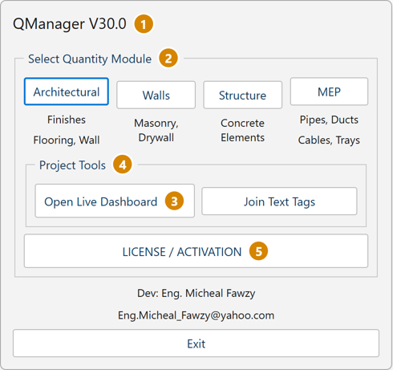
لوحة جانبية تفاعلية بالعربية والإنجليزية تعرض الكميات وتحدثها لحظياً أثناء العمل مع بحث ذكي وفلترة وتصدير مباشر.
F1 وF2 منفصلاً بجانب أبعاده حتى عند تطابق الأبعاد، ثم الحوائط والتشطيبات والـ MEP.↕ طي/توسيع لفتح أو طي جميع القوائم بضغطة واحدة.mm أو m) وحفظها داخل الـ DWG، إدخال اسم معد التقرير (Prepared By)، واختيار نوع التقرير (ملخص Summary أو تفصيلي Detailed)، وفتح نافذة إدارة الفتحات (Openings Manager).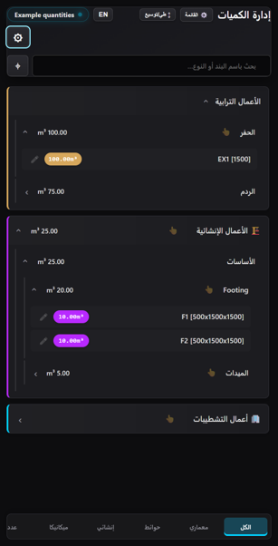
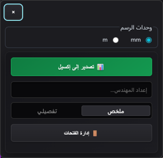
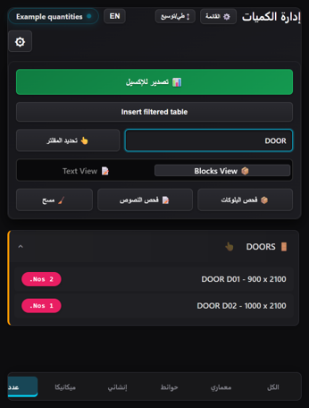
فحص البلوكات (Scan Blocks) أو فحص النصوص (Scan Text) لعرض وحصر جميع البلوكات الرئيسية ونصوص TEXT وMTEXT في مساحة الرسم الحالية بما فيها الطبقات المخفية.DOOR) لتصفية النتائج واستخدم تحديد المفلتر لاختيارها في الرسم فوراً.Insert filtered table لإدراج جدول AutoCAD رسمي من عمودي NAME وNUMBER وصف إجمالي TOTAL في النهاية، أو صدر النتائج مباشرة إلى Excel.تغطية شاملة لكافة بنود المقايسات من التجهيز المعماري وحتى الخرسانات والـ MEP.
Room identification وFloor وCeiling وWall finish وSkirting وOpenings حسب الحاجة، مع دعم خصم الفراغات Void والترقيم التلقائي Auto.00 Door Width، ويخفي بلوكات الأبواب والأبعاد والمحاور والتهشير والفرش لتجهيز اللوحة في ثوانٍ مع إمكانية استعادة العناصر المخفية بضغطة زر.Auto) أو بالنقر اليدوي على طبقة 00 QS Polylines مع حقن نصوص الغرف كـ XData، وتصدير ملف CSV لتعبئة التشطيبات والارتفاعات في Excel ثم إعادة استيراده (Import CSV) لتحديث الغرف برقم الـ Handle!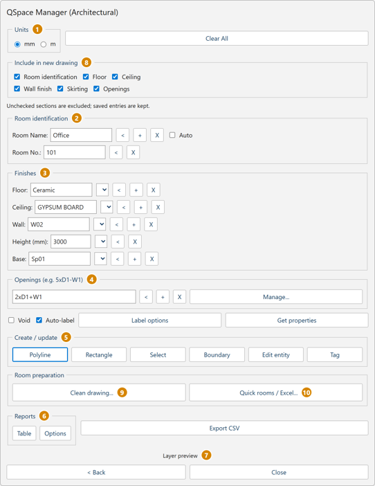
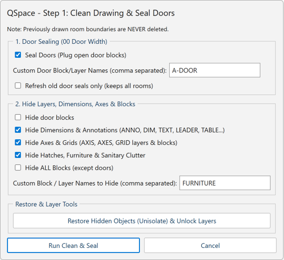
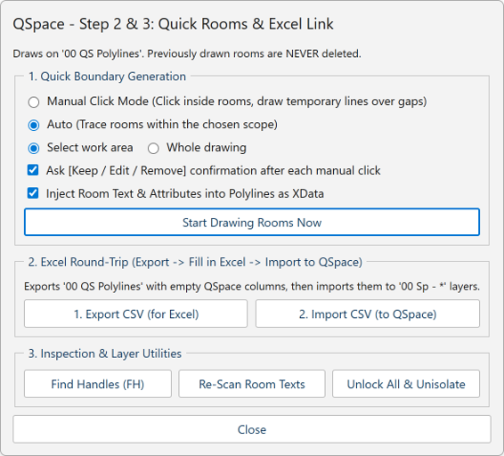
Thick(mm) وارتفاعه H(mm) ونوعه (مثل Hollow أو Solid) ووصفه الإضافي (مثل STC 45 أو Internal partition).Draw Wall لتحويل تهشير الحوائط المغلق ذي الحواف المستقيمة إلى خطوط مزدوجة MLINE محصورة مع الحفاظ على التهشير الأصلي.2xD1-W1) ليقوم البرنامج بخصمها تلقائياً بالسالب في التقارير مع حساب الكميات قبل وبعد الخصم.00 WallType 200mm Hollow - STC 45 - D11 - H3200mm.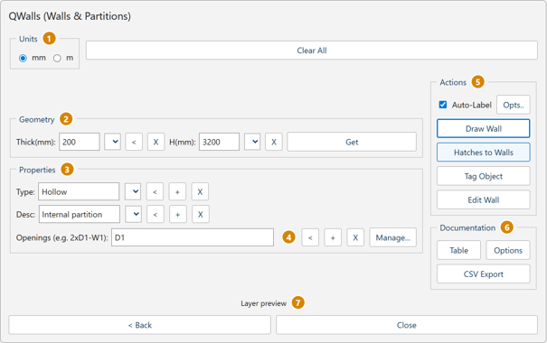
Excavation)، ورقاب الأعمدة (Column Neck). تقبل خانة الأبعاد السمك فقط أو الارتفاع × العرض × الطول (مثل 500x1500x1500).Ground Beam) والكمرات (Beam) وحوائط القص كخطوط MLine بالعرض والعمق.QMPCFOOT لإنشاء حدود الخرسانة العادية للقواعد والميدات بإزاحة محددة، مع حساب وزن حديد التسليح بالطن من نسبة Rebar (kg/m³).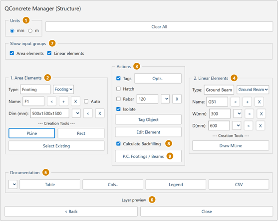
Duct, Pipe) والنظام التابع له (مثل Supply, Drainage).Standard (Single Field) للمواسير (مثل 110mm)، أو وضع الدكت Duct (W x H) كعرض وارتفاع (مثل 700x900) مع معامل S.F..Draw Single Line - Polyline) أو كخط مزدوج (Draw Double Line - MLine) يعبر عن العرض الحقيقي للمسار، أو تحويل خطوط مرسومة مسبقاً والتقاط الخصائص (Get from Entity).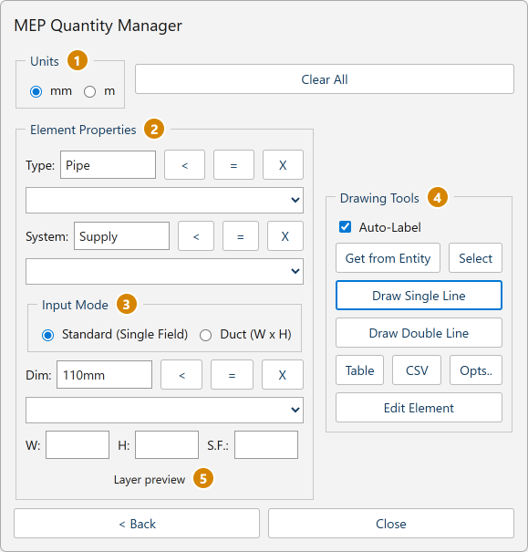
تحكم كامل في عناصر الإنشائي والكهروميكانيكا من داخل AutoCAD مباشرة
Footing) والميدات (Ground Beam) عبر PLine أو Rect أو Draw MLine.Tags)، التهشير (Hatch)، ونسب التسليح (Rebar).Calculate Backfilling) وتوليد الخرسانة العادية (P.C. Footings / Beams).Table)، دليل الرموز (Legend)، وملفات CSV.Pipe) والنظام (Supply) والقطر أو المقاس (Dim: 110mm).Standard (Single Field) ووضع الدكت Duct (W x H).Auto-Label)، سحب خصائص (Get from Entity)، ورسم Single Line أو Double Line.تُقرأ الكميات من هندسة الرسم الحالية وبيانات QManager مباشرة لتوليد ملف إكسيل متكامل يضم صفحة الملخص الإجمالي وصفحات القياسات التفصيلية المرتبطة بالمعادلات ومعرفات العناصر (#Handles).
E. EARTHWORKS (الحفر والردم) قبل A. STRUCTURE، ثم B. WALL TYPES، وC. FINISHING WORKS، وD. MEP WORKS مع إخفاء الفئات الفارغة تلقائياً.Nos. وضرب العدد في القياس، والاحتفاظ بمعرفات العناصر الأصلية (#A1, #B2) في عمود الملاحظات للمراجعة بأمر FH.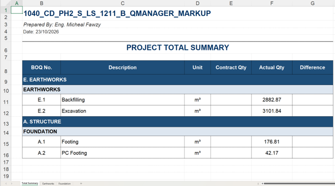
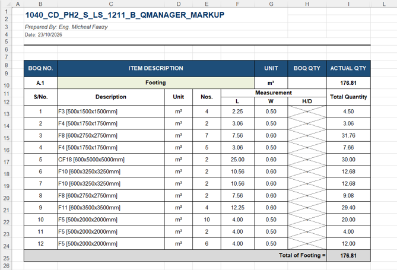
جميع اختصارات سطر أوامر الأوتوكاد وأزرار الالتقاط والتعديل الجماعي المتاحة في QManager.
| الأمر (Command Line) | الوظيفة الهندسية داخل AutoCAD |
|---|---|
QMANAGER | يفتح النافذة الرئيسية للبرنامج (Hub / Main Menu). |
QSPACE | يفتح نافذة حصر الفراغات والتشطيبات المعمارية. |
QWALLS | يفتح نافذة حصر الحوائط والقواطع. |
QCONCRETE | يفتح نافذة حصر العناصر الخرسانية والإنشائية. |
QMEP | يفتح نافذة حصر مسارات الكهروميكانيكا. |
QDASHBOARD | يفتح اللوحة التفاعلية الجانبية (Live Dashboard). |
BWH2ML | يحول تهشير الحوائط المدعوم مباشرة إلى حوائط MLINE محصورة. |
TXTJOIN | يدمج النصوص المتجاورة المختارة في لوحة الرسم لتسهيل قراءتها وحصرها. |
QSPACECLEAN | يفتح نافذة خيارات تنظيف الرسم وغلق فتحات الأبواب. |
QSPACEQUICK | يفتح نافذة رسم الغرف السريعة وأدوات التصدير والاستيراد عبر CSV/Excel. |
QMPCFOOT | ينشئ حدود الخرسانة العادية للقواعد والميدات المدعومة بإزاحة وسمك محددين. |
QBULK | التعديل الجماعي لخصائص عناصر QManager المختارة في خطوة واحدة. |
PH / PrintHandles | طباعة معرفات العناصر المختارة في سطر الأوامر بتنسيق #A1, #B2. |
FH / FindHandles | البحث عن المعرفات الملصقة من الإكسيل والانتقال إليها وتحديدها في الرسم فوراً. |
QM_SAVE_BLOCK_EXCEL | إعادة محاولة حفظ تنزيل تقرير Excel الحالي لوحدة العد. |
QM_ACTIVATE | يفتح نافذة بدء التجربة المجانية لمدة 30 يوماً والتفعيل دون إنترنت. |
Install.cmd.QM_Activate، ثم اختر Start free 30-day trial لبدء التجربة فوراً دون الحاجة للاتصال بالإنترنت..qmrequest من داخل نافذة التفعيل وأرسله إلى المطور لاستلام ملف الترخيص الموقع .qmlicense.لضمان حصول كل مهندس ومكتب فني على أحدث إصدار متوافق مع نسخة AutoCAD الخاصة به، وتقديم الدعم الفني المباشر أثناء فترة الـ 30 يوماً التجريبية، يتم إرسال رابط الحزمة الرسمية فور ملء نموذج الطلب القصير.
تعبئة نموذج طلب الديمو (30 يوماً)